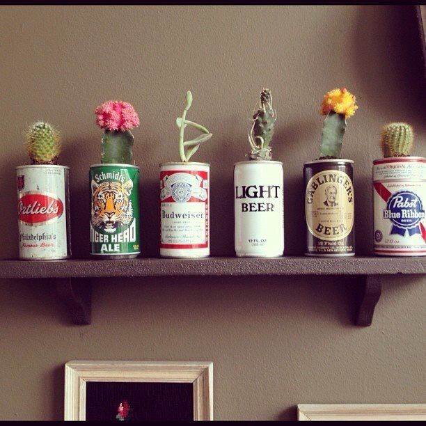

Medioambiente
Nuestro compromiso con el medioambiente
Como todo proceso industrial, el proceso de la cerveza también tiene un impacto ambiental. Los proceso industriales crean muchos gases y muchos residuos que son perjudiciales para el mismo medio ambiente ya que contaminan la capa de ozono y a su vez la acaban. Uno de los productos que se producen en gran cantidad es el dioxido de carbono que a su vez durante el proceso es tratado para que no sea tan contaminante. Por eso desde monos sabios nos comprometimos con el medio ambiente. Cada vez que una fabrica amiga compra un barril de cerveza, es un arbol que plantamos en la patagonia, y asi con nuestro pequeño granito de arena, podemos ayudar a la preservacion de los bosques.
Ayuda desde casa
Desde Monos sabios queremos agradecerte por tu apoyo con la compra de cualquiera de nuestras latas, pero ademas queremos pedirte que no la tires, ¡Reciclalaaaa!, aca te dejamos algunas ideas de como hacerlo.
